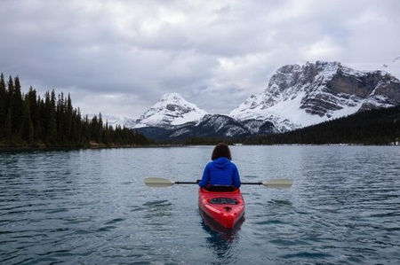

Visiting Important Places
Visit inportant places such as Alberta Provincial Legislature, Royal Tyrrell Museum dinosaur experience, Univeristy of Calgary, Air Force Museum in Calagry, Univrsity of Alberta, viewing wildlife in different national parks. Or, while visiting Alberta you can enjoy yearlong fastival in different part of the province, enjoy a road trip to experience alberta's senic beauty, taste Alberta beef, dine in farm-to-table restaurants, and explore local breweries and distilleries.
Hiking
Hiking in Alberta is an exhilarating and inspiring experience that allows you to connect with nature, explore diverse landscapes, and challenge yourself in some of the most beautiful and rugged terrains in Canada. Alberta boasts a stunning natural landscape, featuring the majestic Canadian Rockies, pristine alpine lakes, lush forests, and rolling foothills. As you embark on your hiking adventure, you'll be immediately immersed in this breathtaking beauty. Towering mountain peaks, like those found in Waterton, Banff and Jasper National Parks, serve as a dramatic backdrop to your journey.
Alberta offers an extensive network of hiking trails catering to all levels of hikers, from beginners to seasoned adventurers. It's an opportunity to disconnect and recharge. The hiking experience in Alberta changes with the seasons. In the summer, wildflowers bloom, and the mountain landscapes burst with color. In the fall, the forests become a patchwork of fiery reds and oranges. Winter offers a unique chance for snowshoeing and ice cleat hiking, with frozen waterfalls and snow-covered landscapes.
Before you hit the trail, it's essential to be well-prepared. Research your chosen trail, check the weather forecast, pack essential gear such as bear spray, and let someone know your hiking plans. Hiking in Alberta is a memorable adventure, an opportunity to commune with nature, and a chance to appreciate the sheer magnificence of the Canadian Rockies.
Kayaking
Kayaking in Alberta is an invigorating adventure that allows you to explore some of the most pristine and captivating waterways in Canada. The province's renowned destinations, like Lake Louise and Moraine Lake in Banff National Park, offer best settings for your kayaking journey. Alberta provides a diverse range of water bodies for kayaking enthusiasts. Consider kayaking on lakes such as Lake Minnewanka, Lake Louise, and Medicine Lake, or navigate the Bow River, Athabasca River, and the North Saskatchewan River for river kayaking experiences. While kayaking, you're likely to come across a variety of wildlife that call Alberta's waterways home.
Kayaking provides a unique sense of serenity and connection with the natural world. Kayaking in Alberta offers distinct experiences throughout the seasons. In the summer, you can paddle across calm lakes under the warm sun. In the fall, you'll be surrounded by the vivid colors of changing foliage. And during the winter, when the lakes freeze over, you can try ice kayaking, a thrilling experience unique to the region. Whether you're a novice or an experienced kayaker, Alberta has opportunities for all skill levels. Safety should be a top priority while kayaking. Always wear a personal flotation device (PFD), be aware of weather conditions, and let someone know your kayaking plans. Bear safety is also important, as Alberta's wilderness is home to wildlife such as grizzly bears.
Summer Camping
Summer camping in Alberta offers a remarkable opportunity to connect with nature, escape the hustle and bustle of city life, and immerse yourself in the breathtaking landscapes of this Canadian province. Alberta's camping sites are located in some of the most picturesque settings you can imagine. The province's national and provincial parks, including Banff, Jasper, Kananaskis, and Waterton Lakes, serve as the perfect backdrop for your camping adventure.
Camping isn't complete without a crackling campfire. Gather around the fire pit with family and friends, roast marshmallows, and share stories. Throughout the night, you'll be serenaded by the sounds of nature. The calls of nocturnal birds, the chirping of crickets, and the occasional howl of a distant wolf become a lullaby that helps you drift into a peaceful sleep. Wake up to the melodious songs of birds in the morning. Alberta's wilderness is home to a variety of wildlife. While camping, you may encounter deer, elk, bears, and other animals. Always remember to practice wildlife safety, such as storing food properly and making noise to alert animals of your presence.
Unplugged and Reconnect Camping provides a chance to disconnect from screens and digital distractions. It's an opportunity to reconnect with loved ones, appreciate the simple joys of life, and find a deep sense of peace in nature. While enjoying the splendors of Alberta's wilderness, remember to follow the principles of "Leave No Trace." This means respecting the environment by packing out all your trash and leaving the campsite as beautiful as you found it. Summer camping in Alberta is an experience that renews the spirit, deepens your connection with the natural world, and leaves you with cherished memories of adventure and tranquility. It's a reminder of the unparalleled beauty and serenity that can be found in Canada's great outdoors.
Skating
Skating in Alberta is an enchanting experience that invites you to embrace the true essence of a Canadian winter. Alberta's ice rinks and frozen lakes provide the perfect canvas for a delightful skating adventure. Lakes, ponds, and community rinks throughout the province freeze over, creating vast expanses of glistening ice. These natural ice rinks become your playground for an extraordinary winter journey. In Alberta, you can skate on some of the world's most breathtaking natural ice surfaces. Lake Louise, nestled in Banff National Park, is a prime example. As you glide across the frozen lake, you're surrounded by towering snow-covered peaks, creating a sense of serenity and inspiring beauty.
In addition to natural ice surfaces, Alberta's many communities maintain outdoor skating rinks. These rinks offer a sense of community and warmth, as families and friends gather to enjoy the simple pleasure of skating. Glide leisurely on a frozen pond, twirl on an outdoor rink with friends, or challenge yourself with a game of shinny hockey. The choice is yours, and each option comes with its own blend of fun and adventure.
Winter nights in Alberta offer some of the clearest skies you'll ever see. The shimmering constellations above add an extra layer of magic to your skating experience. Many outdoor skating locations in Alberta provide fire pits where you can warm up and roast marshmallows. Gathering around a crackling fire with a cup of hot chocolate in hand is a cherished tradition that adds to the overall ambiance. Alberta hosts various winter festivals that celebrate the joy of skating. The Ice Magic Festival in Lake Louise, for instance, showcases intricate ice sculptures and offers a captivating skating experience on the lake, where you can skate past beautifully crafted ice art. Skating on natural ice requires caution, so it's important to ensure that the ice is safe and adequately frozen. Local authorities often provide updates on ice conditions to help you make informed decisions.
Winter Camping
Winter camping in Alberta is an extraordinary adventure that beckons the intrepid souls who are eager to explore the province's pristine, snow-covered landscapes. Alberta's snowy wonderland transforms into a serene and captivating realm where nature enthusiasts can experience a unique blend of tranquility, challenge, and beauty. The world of winter camping in Alberta greets you with a profound hush. The landscape is blanketed in fresh, powdery snow, muffling every sound except for the occasional crunch of your boots or the whisper of the wind through snow-laden trees. This serene silence is your constant companion. Alberta's winter offers a variety of settings for camping, from dense forests to open prairies. The snow-covered terrain provides an enchanting playground where you can partake in a plethora of activities, from snowshoeing and cross-country skiing to building snow shelters and enjoying snowball fights.
The winter skies of Alberta are known for their crisp clarity. As night falls, you'll find yourself under a vast, glittering canopy of stars. Alberta's northern regions offer a chance to witness the captivating Northern Lights, also known as the Aurora Borealis. These dancing curtains of light are a breathtaking spectacle, adding a touch of magic to your winter camping adventure. While winter camping, you may encounter Alberta's diverse wildlife. Keep an eye out for deer, elk, and even the elusive coyote or wolf as they leave their tracks in the pristine snow.
Winter camping requires careful planning and specialized gear to ensure your safety and comfort. Sturdy, cold-resistant tents, warm sleeping bags, and layered clothing are essential. Alberta's provincial and national parks often offer designated winter camping areas with amenities like heated huts or yurts, making it accessible for campers of all experience levels. Understanding cold weather camping techniques, knowing how to navigate in snowy conditions, and being aware of changing weather patterns are all part of the learning curve for a successful winter camping trip. It offers the chance to experience a serene and untouched world, where the beauty of the landscape and the serenity of avstarry night will create lasting memories.